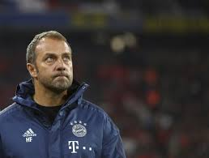
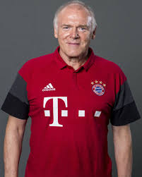

For information on the coaches, click their images
| Serial | Coach Name | Position | Nationality | Image |
|---|---|---|---|---|
| 1 | Hansi Flick | Coach | German |  |
| 2 | Miroslav Klose | Assistant Coach | German | |
| 3 | Herman Gerland | Assistant Coach | German |  |
| 4 | David Alaba | Assistant Coach | German | |
| 5 | Toni Tapalovic | Goal Keeping Coach | German | |
| 6 | Prof Dr Holger Broich | Chief Scientific Officer and Head of Fitness | German |